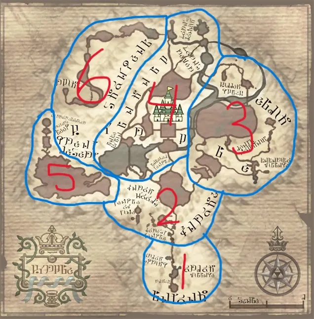

Zelda Informer
Map of Twilight Princess
Section 1: Ordona Province
This province is home to the people of Ordon Village, the place where Link grew up. It is a small and simple province watched over by the light spirit Ordona.
Section 2: Faron Woods
Faron Woods is full of lush greenery and is home to a group of monkeys. Some landmarks to note are the Forest Temple and the Sacred Grove, home to the Temple of Time.
Section 3: Eldin Province
Eldin Province is home to the people of Kakariko Village and a special race of creatures known as the Goron. They make their home on Death Mountain and take care of the mines found there. Some other landmarks are the Bridge of Eldin, the Hidden Village, and Hyrule Field.
Section 4: Lanayru Province
Lanayru Province is known for being home to Hyrule Castle and the Hyrule Castle Town, a bustling area full of shops and stores. It is also home to the Zora people who make their abode in Zora's Domain. Some other landmarks are Zora's River, the Fishing Hole, and Lake Hylia where the Lakebed Temple sleeps.
Section 5: Gerudo Desert
The Gerudo Desert is a vast and arid region located west of Hyrule. While there are no inhabitants there, it is home to the prison grounds known as Arbiter's Grounds, a place where dangerous thieves were sent.
Section 6: Snowpeak
Snowpeak is a snowy mountain region located in the northern part of Hyrule. It is a very empty place other than a secluded mansion where two yetis have made their home.